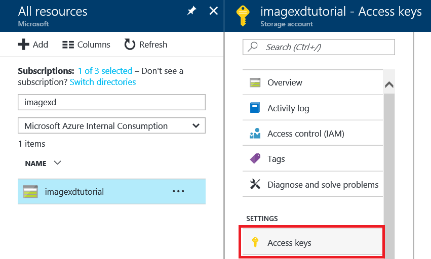
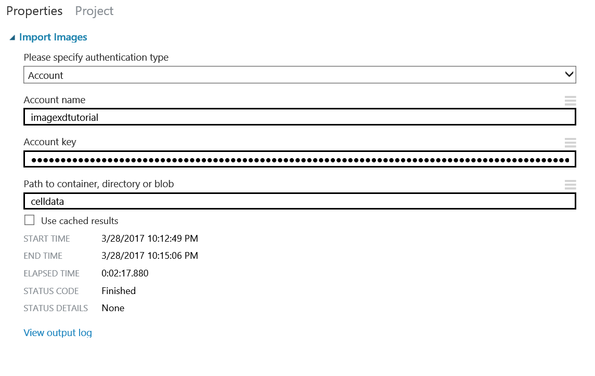
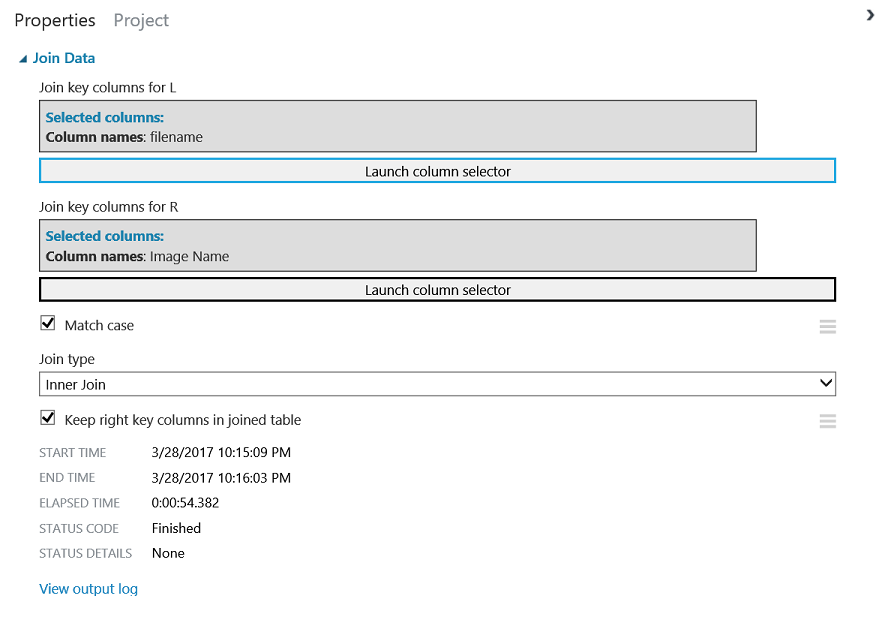
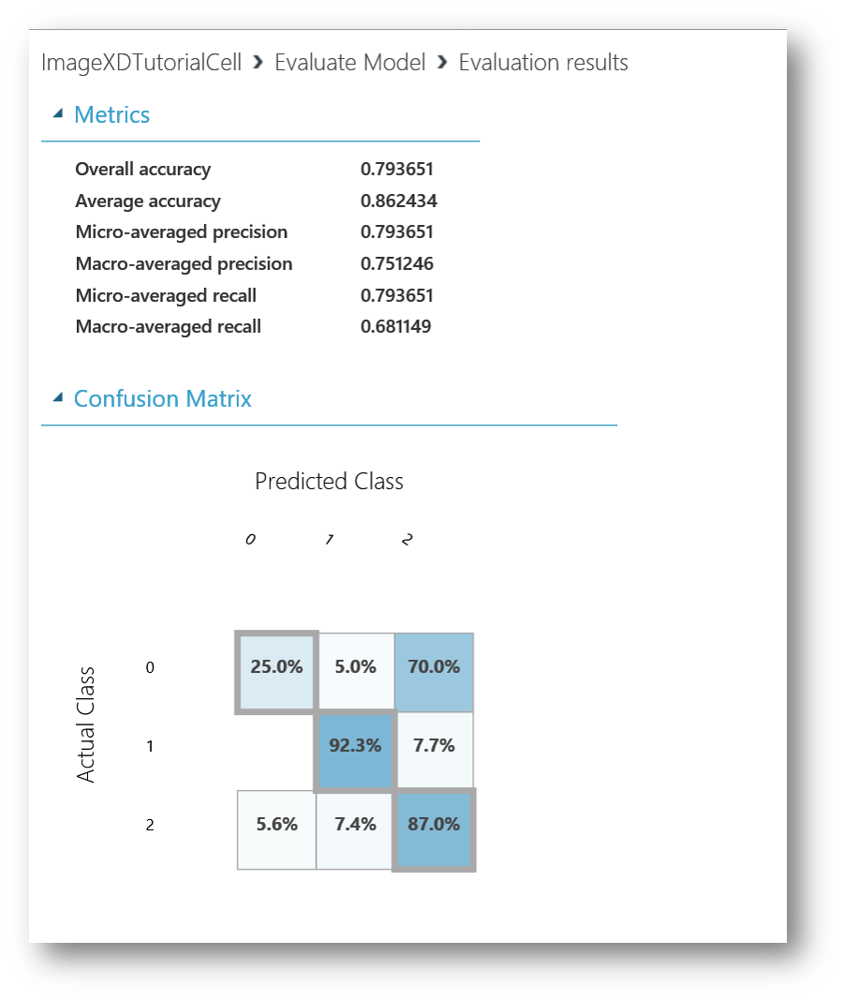
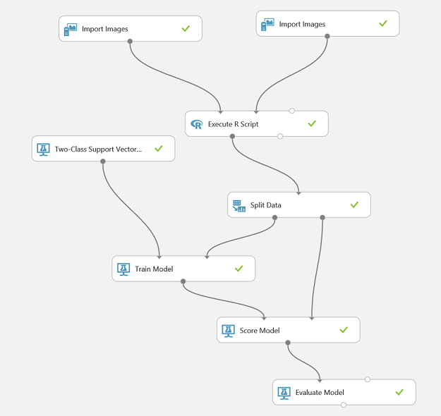
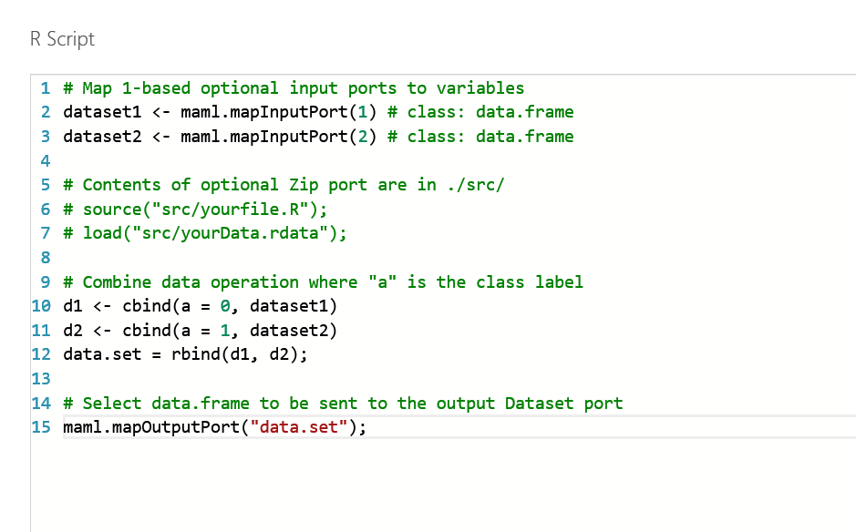
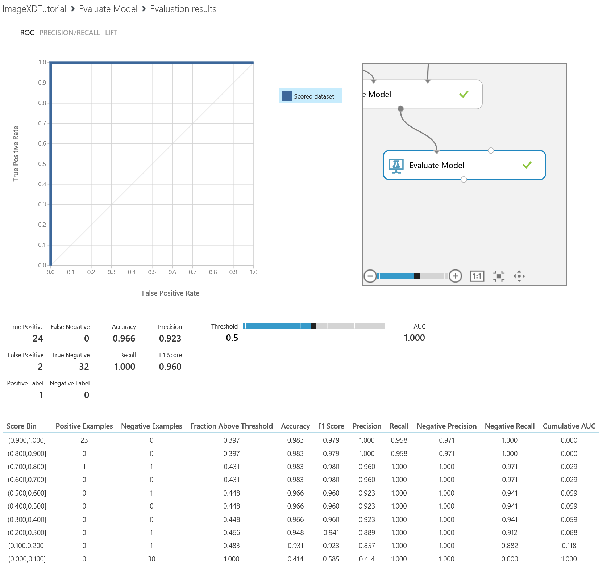

Image classification with Azure Machine Learning
Overview
Microsoft Azure Storage is a set of services that allows you to store large volumes of data in a cost-effective manner and in a way that makes the data readily and reliably available for consumption. Data committed to Azure Storage can be stored in blobs, tables, queues, or files. Azure blobs are ideal for storing images, videos, and other types of data, and are frequently used to provide input to and capture output from other Azure services such as Azure Machine Learning and Azure Stream Analytics. Azure tables provide NoSQL storage for semi-structured data. Azure queues support queued message transfers between applications (or parts of applications) and can be used to make applications more scalable and robust by loosely coupling them together. Finally, Azure Files use the Server Message Block (SMB) protocol to share files through the cloud and access storage as network drives.
Azure Machine Learning is a cloud-based predictive-analytics service that offers a streamlined experience for data scientists of all skill levels. It's accompanied by the Azure Machine Learning Studio (ML Studio), which is a browser-based tool that provides an easy to use, drag-and-drop interface for building machine-learning models. It comes with a library of time-saving experiments and features best-in-class algorithms developed and tested in the real world by Microsoft businesses such as Bing. And its built-in support for R and Python means you can include scripts of your own to customize your model. Once you've built and trained your model in the ML Studio, you can easily expose it as a Web service that is consumable using a variety of programming languages, or share it with the community by placing it in the Cortana Intelligence Gallery.
In this lab, you will learn how to work with storage accounts, storage containers, and storage blobs. You'll also get familiar with some of the tools used to manage them, including the Microsoft Azure Storage Explorer, a free tool from Microsoft that runs on Windows, macOS, and Linux. The knowledge you gain will be used in later labs featuring Azure services that rely on blob storage for input and output, and will serve you well when you use Azure in your research.
you will then create a machine learning experiment in Azure Machine learning studio and use it to train an SVM based image classifier based on the cell data used in the ImageXD tutorials.
Objectives
In this hands-on lab, you will learn how to:
- Create storage accounts using the Azure Portal
- Create storage containers using the Microsoft Azure Storage Explorer
- Upload blobs to storage using the Microsoft Azure Storage Explorer
- Work with Azure Machine Learning Studio
- Prepare input image data and use it to train an SVM based model
- Score the model and evaluate its accuracy
Prerequisites
The following is required to complete this hands-on lab:
Exercises
This hands-on lab includes the following exercises:
Estimated time to complete this lab: 60 minutes.
Exercise 1: Use the Azure Portal to create a storage account
The Azure Portal allows you to perform basic storage operations such as creating storage accounts, viewing what's stored under those accounts, and managing the access keys associated with the accounts. In this exercise, you'll use the portal to create a storage account.
-
Open the Azure Portal in your browser. If you are asked to sign in, do so with your Microsoft account.
-
The first step in using Azure Storage is to create one or more storage accounts. To create a storage account, click + New in the ribbon on the left. Then click Storage, followed by Storage account.

Adding a storage account
-
In the ensuing blade, enter a name for the new storage account in Name field. The name is important, because it forms one part of the URL through which blobs created under this account can be accessed.
Storage account names can be 3 to 24 characters in length and can only contain numbers and lowercase letters. In addition, the name you enter must be unique within Azure; if someone else has chosen the same name, you'll be notified that the name isn't available with a red exclamation mark in the Name field.
Once you have a unique name that Azure will accept (as indicated by the green check mark in the Name field), select Create new under Resource group and type "StorageLabResourceGroup" (without quotation marks) into the box below to name the resource group that will be created for the storage account. Select the location nearest you in the Location box. Then click the Create button at the bottom of the blade.

Creating a storage account
-
Click Resource groups in the ribbon on the left side of the portal to list all of your resource groups. In the "Resource groups" blade, click the StorageLabResourceGroup resource group. Once the blade showing the contents of the resource group appears, click the storage account that you created in the previous step.

Opening a storage account
-
In the blade for the storage account, click Blobs to view a list of blob containers.

Viewing blob containers
The storage account currently has no containers. Before you create a blob, you must create a container to store it in. You can create containers and upload blobs in the Azure Portal, or you can use external tools that offer additional features that the portal does not. In Exercise 2, you will use the cross-platform Microsoft Azure Storage Explorer to create containers and upload blobs.
Exercise 2: Use Storage Explorer to create a container and upload blobs
A container is similar to a folder in a file system. A storage account can have an unlimited number of containers, and a container can store an unlimited number of blobs. Container names must be from 3 to 63 characters in length and may contain numbers, dashes, and lowercase letters. Dashes cannot be consecutive, and a container name cannot start with a dash. The following diagram illustrates the blob storage schema:

Blob storage schema
In this exercise, you will create a container named "images" in the storage account you created in Exercise 1. Then you will upload several blobs to it.
-
In your browser, go to http://storageexplorer.com/ and download and install the Microsoft Azure Storage Explorer.
-
Start Storage Explorer. If you are asked to log in, do so using your Microsoft account — the same one that you used to log in to the Azure Portal. If you are not asked to log in and don't see the storage account you created in the previous exercise in Storage Explorer's left pane, click the Azure Accounts settings button highlighted below, click Add an account, and log in with your Microsoft account.

Adding an account to Storage Explorer
-
In Storage Explorer, click the small arrow next to the storage account you created in Exercise 1 to reveal the items underneath it. Then right-click Blob Containers (on a Mac, Control-click instead) and select Create Blob Container from the context menu.

Creating a container
-
Type "images" (without quotation marks) into the box that appears under Blob Containers. Then press Enter to create a new container named "images_bcc".

Creating an "images" container
-
The next step is to create blobs by uploading files to the container created above. Click the Upload button in the Storage Explorer. Then select Upload Files... from the menu.

Uploading files to the "images" container
-
Click the ... button to the right of the field labeled "Files." In the ensuing dialog, navigate to this files from the resources\celldata directory of this lab and select all the files in the subdirectory. Then close the dialog and click the Upload button.
The default blob type — block blob — supports up to approximately 4.75 TB of data per blob. Append blobs are similar to block blobs but are optimized for append operations. Page blobs can hold up to 1 TB of data and are used to hold virtual hard disks (VHDs) for virtual machines.
Exercise 6: Create an experiment and load a dataset
The first step in building a machine-learning model with Azure Machine Learning is to use ML Studio to create an experiment and load data into it. Azure Machine Learning Studio comes with several sample datasets. However, in this exercise, you will load the data that you uploaded to your storage account above.
-
In your Web browser, navigate to http://studio.azureml.net and click the Sign In button. If you are asked to log in, do so using your Microsoft account.

Signing in to ML Studio
-
Start a new experiment by clicking + NEW in the lower-left corner of the page, followed by Blank Experiment.

Creating a blank experiment
-
Click the default experiment name at the top of the canvas and change it to "Image Classifier" (without quotation marks).
-
To the left of the experiment canvas is the modules palette. Type "import " in the search box at the top of the modules palette to find the Import Images module.
-
Drag the Import Images* module from the modules palette and drop it onto the experiment canvas.
-
Next, point the Import Images to the cell data in blob storage. In a separate window, visit the Azure Portal (portal.azure.com) where you had set up the storage account and copy the Account Key for the storage account.

Copy access key from Azure Portal
-
Next set the Properties of the Import Images module to point to the storage account using the account key and container name for the cell images.

Connect to blob storage in AzureML
-
To see what this dataset looks like, click the output port (the circle in it) at the bottom of the module and select Visualize.
-
The features in this dataset have been extracted by the OpenCV based Import Images module, with each row representing an cell image and each column representing a feature.

Viewing the raw data
-
Close the visualization window by clicking the "x" in the upper-right corner.
In this exercise, you learned how to create a new ML experiment and import a sample dataset. Note that you can upload custom datasets by clicking the + NEW button in the ribbon at the bottom of the window, and then clicking DATASET followed by FROM LOCAL FILE. Next up: preparing the sample data for use.
Please do so now and upload the Resources\all.csv file that is a 2 column file with the file name and label for the images uploaded in the previous step
Exercise 7: Preprocess the data
No dataset is perfect. Most require some amount of preparation before they can be used to train a model. In this particular instance we are missing the class labels which are present in a different file.
To add this file, click on the green "+" sign at the bottom left of Azure ML Studio and upload the all.csv file from the \Resources folder of this lab. Once uploaded the csv file will appear under Saved Datasets -> My Datasets
-
At the top of the modules palette, type "join" (without quotation marks) into the search box to find the Join Data module. Drag the module over to the experiment canvas and connect it to the output port of the Import Images and all.csv datasets by dragging an arrow downward from the output port.
Join the data on filename (Import Images) and Image Name (all.csv). This will ensure that you combined the class labels in the same file as the extracted features.

Joining two datasets
> A key concept to understand in Azure ML Studio is that of ports and connectors. In this step, you connected the output port of the data module to the input port of the **Join Data** module. The data flows from one module to the next through the connector. Some modules have multiple input and output ports. If you want to know what a port does, hover over it with the mouse and a tooltip will pop up. To call up the documentation for an entire module, right-click (on a Mac, Command-click) the module and select **Help** from the ensuing menu.
Exercise 4: Select a learning algorithm and train the model
Now that the data is ready and the features are selected, constructing a robust predictive model requires training and testing the model. You will use part of the dataset to train the model, and another part of it to measure how adept the model is at predicting automobile prices.
Before you can train the model, you must select a learning algorithm to use. Classification and regression are two types of supervised machine-learning algorithms. Classification is used to make a prediction from a defined set of values, such as the make of a car (for example, Honda or BMW). Regression is used to make a prediction from a continuous set of values, such as a person's age or the price of an automobile. Azure Machine Learning offers several types of classification and regression algorithms for you to choose from, as well as algorithms of other types.
The Azure Machine Learning team has put together a "cheat sheet" to help you decide which machine-learning algorithm to choose based on the purpose of your model. You can view it at http://aka.ms/MLCheatSheet.
The goal of this lab is to predict the price of an automobile from a set of input features, so you will use a regression model. In this exercise, you will train a Support Vector Machine model, and in the next exercise, you will test the results.
-
You can use a single dataset for training and testing by splitting its output. Find the Split Data module in the modules palette and drag it over to the canvas. Then connect the output of the last Select Columns in DataSet module to the Split Data module. Set Fraction of rows in the first output dataset to 0.8. This will use 80% of the data to train the model, and hold back 20% for testing. Leave Random seed set to 0. This parameter controls the seeding of the pseudo-random number generator and allows you to produce different random samples by entering different values.
-
Click the SAVE button to save the experiment.
-
Click the RUN button to run the experiment.
-
To specify a learning algorithm, type "SVM" into the search box in the modules palette. Then drag a Two-Class Support Vector Machine module onto the canvas. Since the data has 3 classes, you can use the One-vs-All-Multiclass technique before we connect the Train module step.
-
Add a Train Model module to the canvas. Connect the output of the One-vs-All-Multiclass module to the left input of Train Model, and the output from Split Data to the right input of Train Model. Then select the Train Model module and click Launch column selector in the Properties pane. Next, you need to select the predicted value that you want to train the module for.
-
Select WITH RULES on the left and make sure Include and column names are selected in the drop-down lists. Then add the "class" column to the box on the right. This is the value that your model is going to predict. Finish up by clicking the check mark in the lower-right corner.

Adding a Train Model module
-
Click the SAVE button to save the experiment.
-
Click the RUN button to run the experiment.
You now have a trained regression model. The next step is to score the model to see how adept it is at predicting automobile prices.
Exercise 10: Score the model
In this exercise, you will score the model you trained in the previous exercise. Scoring determines how well the model was trained — that is, how adept it is at predicting target values from values presented to it. ML Studio makes the scoring process very easy. You used 80% of the dataset that you uploaded to train the model. You will use the remaining 20% to score it
-
Add a Score Model module to the canvas. Connect the output of the Train Model module to the Score Model module's left input port. Then connect the right output port of the Split Data module to the right input port of the Score Model module. That connection represents the 20% of the data that was not used for training.
-
Click the SAVE button to save the experiment.
-
Click the RUN button to run the experiment.
-
After the run finishes, click the output port of the Score Model module and select Visualize.
-
Close the visualization window by clicking the "x" in the upper-right corner.
-
To evaluate the quality of the results, add an Evaluate Model module to the experiment canvas. Connect the output port of the Score Model module to the left input port of the output of the Evaluate Model module. (There are two input ports because Evaluate Model can be used to compare two models.). you have completed building the entire workflow for the image classifier and your canvas should look like the below -

The complete workflow
-
Click the SAVE button to save the experiment.
-
Click the RUN button to run the experiment.
-
Click the output port of the Evaluate Model module and select Visualize from the menu.

The evaluation results
-
Close the visualization window by clicking the "x" in the upper-right corner.
Once the model is adequately refined, you might want to be able write programs that utilize the model. You can deploy it as a Web service and interact with it programmatically. Before deploying as a Web service, you need to streamline your experiment. This involves creating a new experiment from your trained model, removing unnecessary modules, and adding Web-service input and output modules. Fortunately, ML Studio can do all of this for you.
-
At the bottom of the screen, the SET UP WEB SERVICE button helps ou do just this. you can do this as an optional exercise as time permits.
-
Alternately if you built a classifier using the bcc / hcpnone data, the workflow looks like the below (as this is a 2 class dataset). Each of the Import Images module takes as input the images under bcc and hcpnone labels from

2 class image classifier
-
The Execute R script module merely assigns class labels to the two different sets of images and combines them. Here is the code that you need to add for this module

2 class image classifier results
-
This is a better dataset and has a much higher accuracy in the trained model

2 class image classifier results
Summary
Here's a quick summary of the important concepts that you learned in this lab:
- Azure Storage is a set of services for storing data durably and reliably
- Azure Storage blobs can contain any type of data, just like files in a file system, and are frequently used for input and output to other Azure services
- The Azure Portal enables you to perform basic storage operations, such as creating storage accounts, creating blob containers, and uploading and downloading blobs
- Create a new experiment in Azure Machine Learning Studio
- Import a sample dataset and prepare it for analysis
- Define the features of a model and select a learning algorithm
- Train and score the model
Copyright 2017 Microsoft Corporation. All rights reserved. Except where otherwise noted, these materials are licensed under the terms of the Apache License, Version 2.0. You may use it according to the license as is most appropriate for your project on a case-by-case basis. The terms of this license can be found in http://www.apache.org/licenses/LICENSE-2.0.